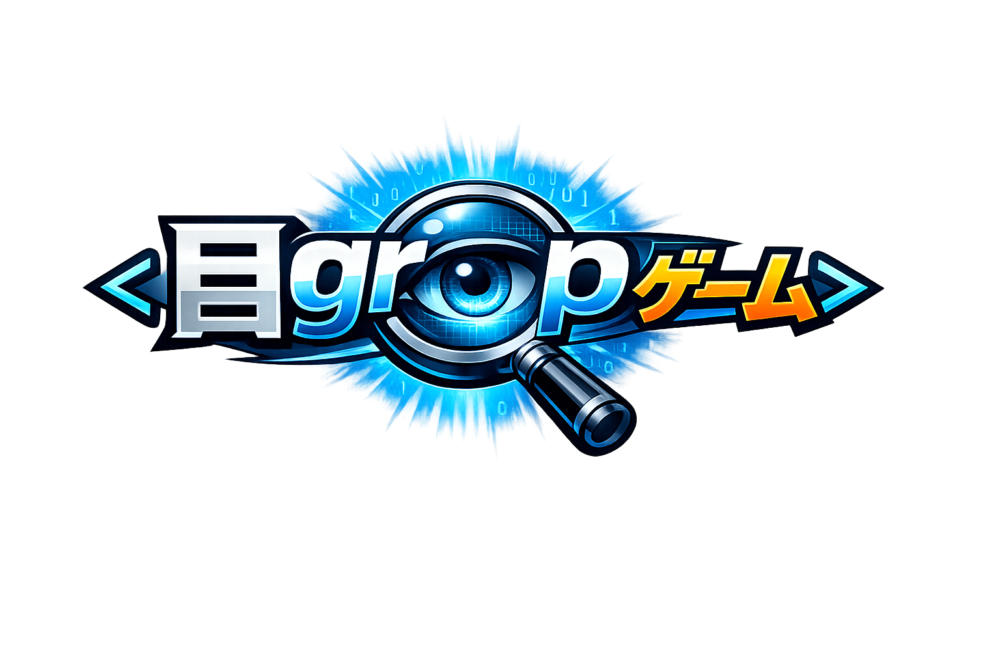

24365 IT戦士 ― 目grep
流れるログから、見本と同じ異常を見つけろ。
見落とすたびにライフ減少。ログは徐々に加速する。
監視を開始
24365
目grep
SCORE
0
COMBO
0
LIFE
♥♥♥
Ⅱ
⚡ ログ速度
1.0x
🔍
FIND
ERROR
0 / 3
production.log
☝️
🧑💻
監視開始
怪しい行をタップ
100%
INCIDENT REPORT
監視終了
スコア
0
最大コンボ
0
発見件数
0
正解率
0%
もう一度監視
タイトルへ
一時停止
再開
監視終了